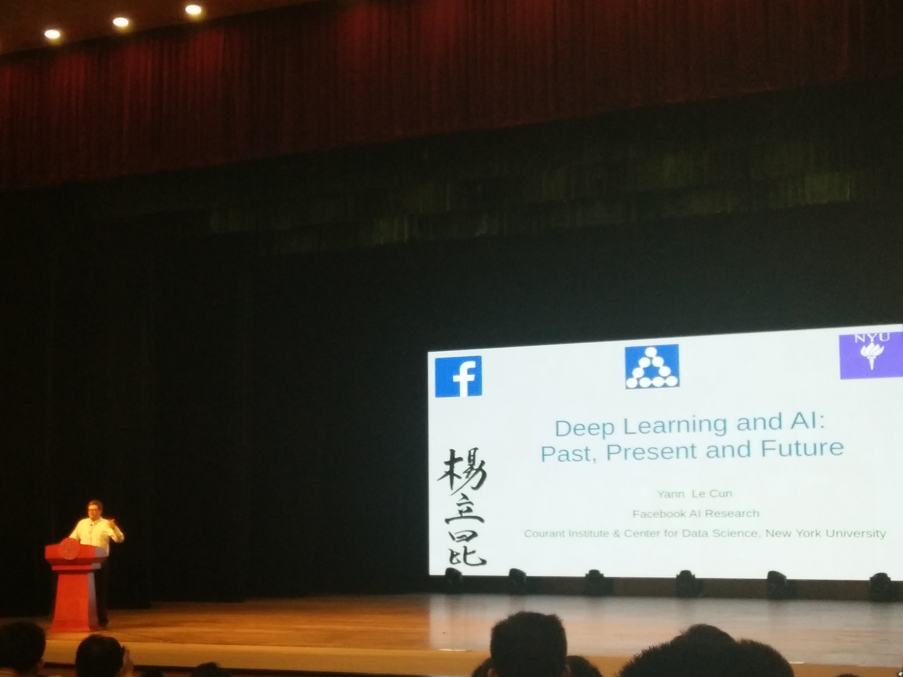
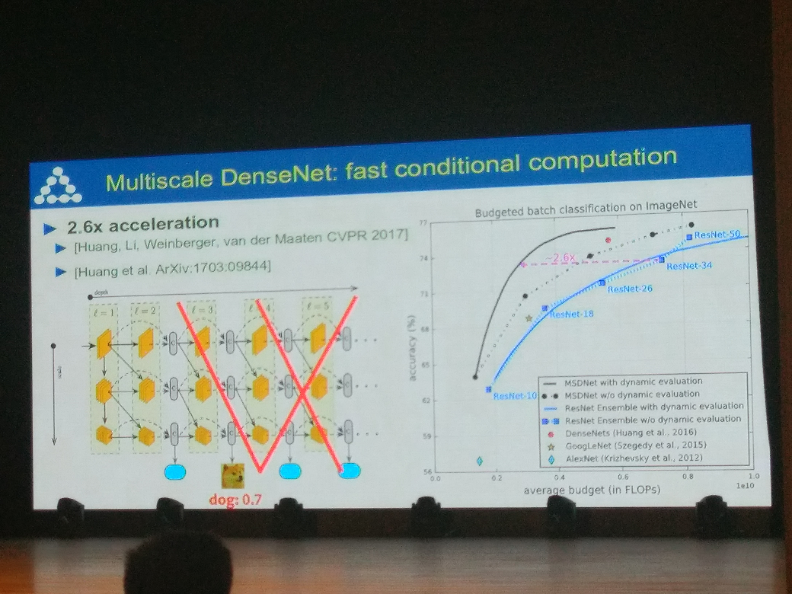
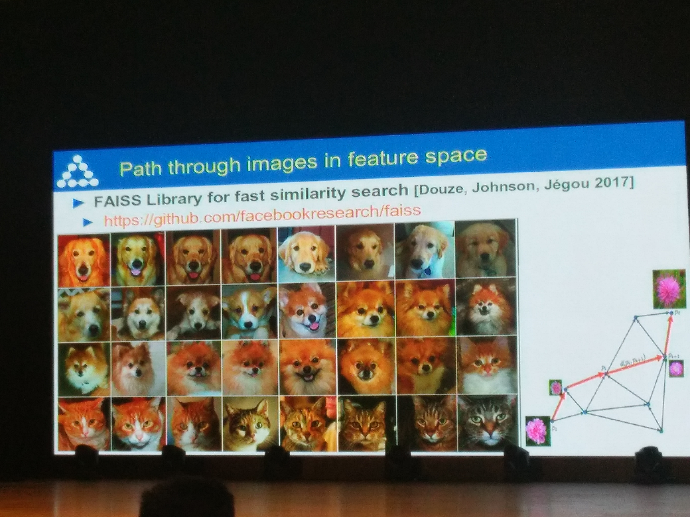
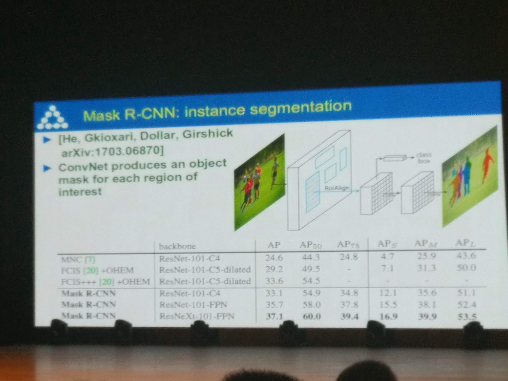
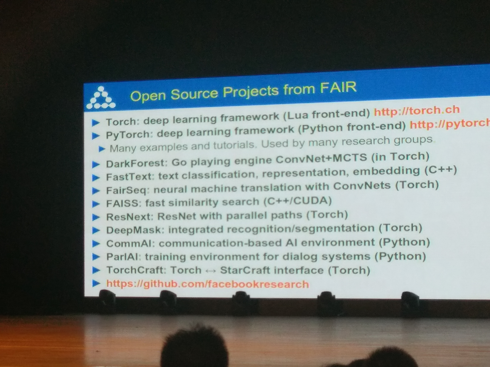
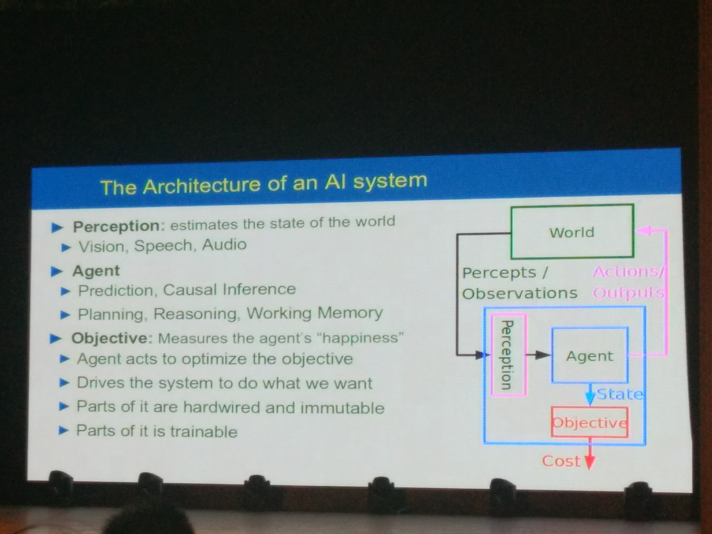
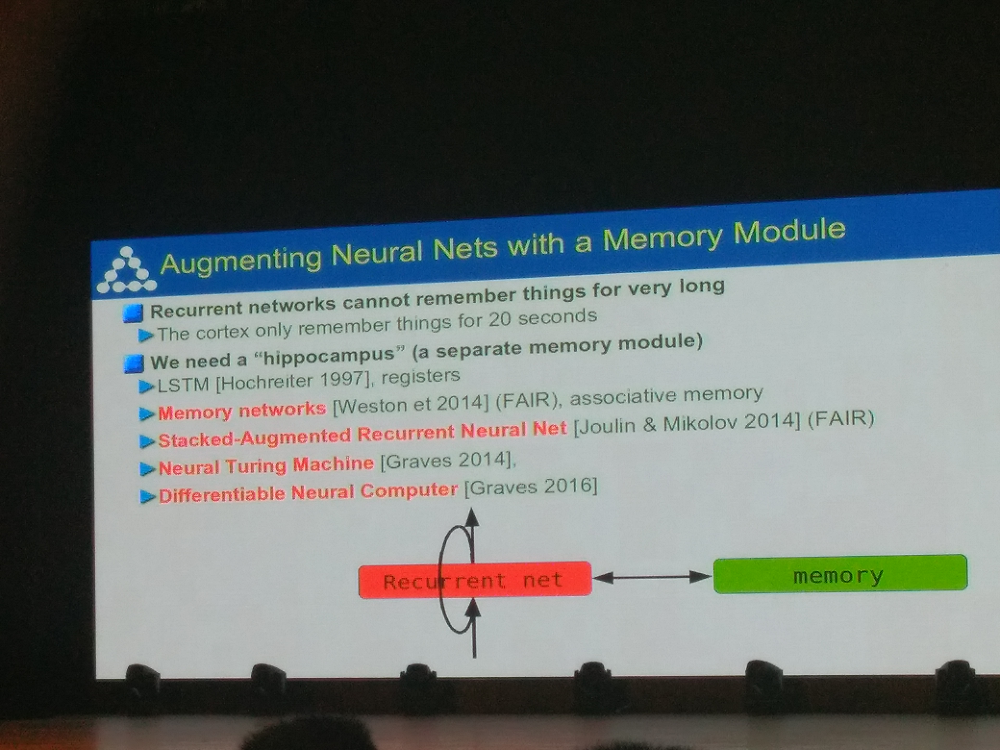
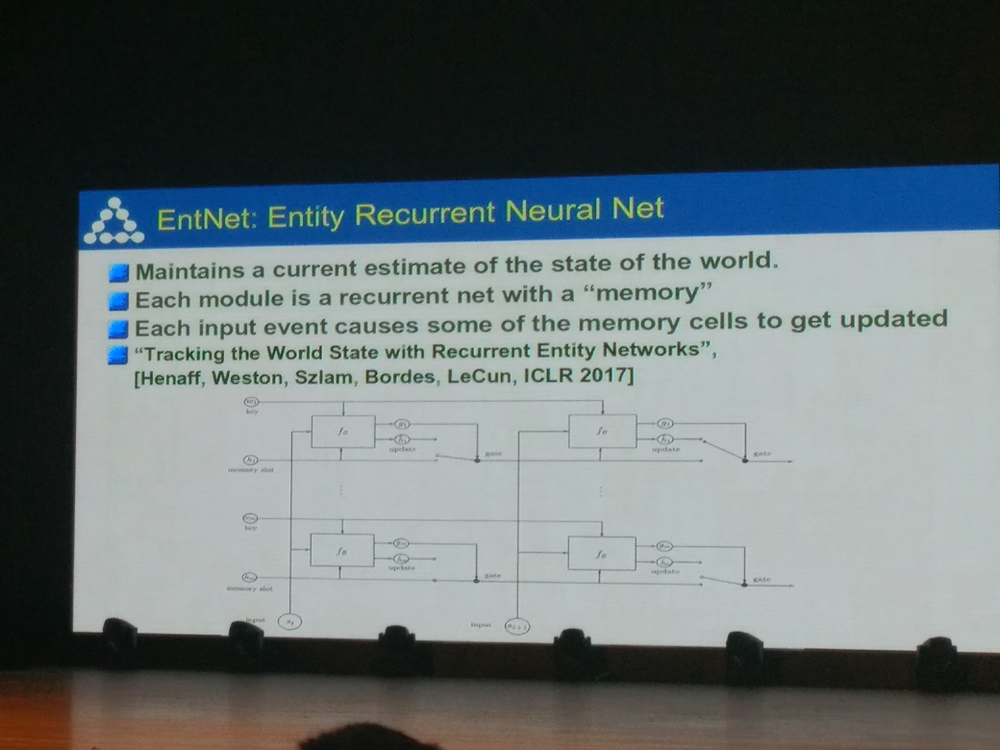
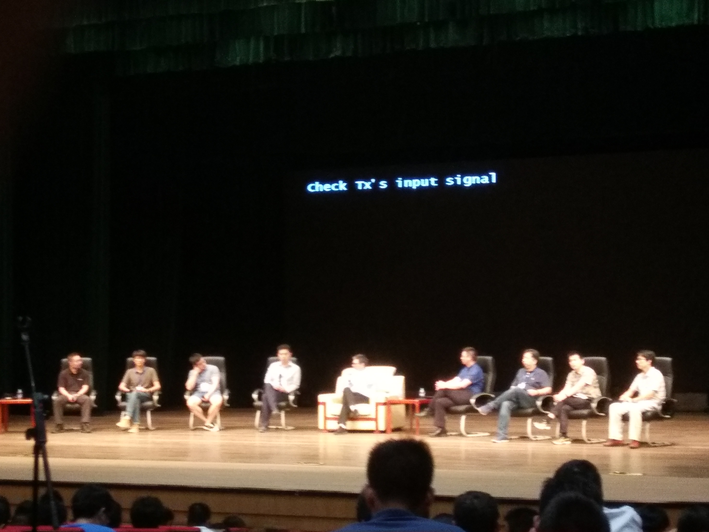

换电脑的时候收拾旧电脑里的东西，偶然翻出了2017年在交大参加Yann Lecun讲座时拍的PPT照片，讲的基本都是2017年FAIR的最新研究。回想2017虽然时间不算长却也恍如隔世，重新翻看这些照片时竟有种莫名的新鲜感。





时至如今，当时的最新研究或已成为某个领域无法绕开的里程碑，或已被新的state-of-the-art超越，或被人遗忘，或写进教科书。
- 2017年初Arjovski组提出Wasserstein GAN，一举使得之前鲜有人问津的GAN推向如日中天的程度
- 2017年10月Proximal policy optimization开始挂在ArXiv，用简单有效的实践把从前晦涩小众的Trust region policy gradient转为benchmark型的算法
- 从不同的角度出发，但与PPO解决了同一问题的ACKTR
- 2017年计算机传统视觉任务开始成熟，新出现的文章基本是在前人摸索出的大框架下修修补补，具体来说
- 语义分割：Google的DeepLab组发了一篇PAMI，宣告这个领域主要的重大问题基本都已解决，DeepLab的ResNet + Atrous convolution + CRF一统天下
- 目标检测：Mask RCNN与YOLO v3平分秋色，二者都成为很多下游计算机视觉领域的标准基础模型
- 目标识别：最后一篇受到比较广泛关注的文章，可能是MSRA的这篇Look Closer to See Better: Recurrent Attention Convolutional Neural Network for Fine-Grained Image Recognition，之后该领域已经完全被ResNet攻克，从前做recognition的组开始转型
- Yann Lecun在FAIR的一个组一直在做graph spectral convolution，其中用到的一些理论和实践都非常漂亮，虽然2018年底graph convolution突然备受关注，但相比更受人关注的spatial convolution，我打心底还是很欣赏spectral convolution这一系列工作的
- 对我个人来讲最最重要的工作，是在年底的ICLR 2018上，其中很多oral文章的质量让我佩服不已不已，其中最重要的两篇分别是Characterizing Adversarial Subspaces Using Local Intrinsic Dimensionality和Stanford大佬Sinha的Certifying Some Distributional Robustness with Principled Adversarial Training ，这两篇文章完全改变了我对对抗样本领域heuristic堆trick没有theoretical backup的印象，从此将我带进对抗样本的大坑中




上面的很多研究，虽然一一道来有种煮酒论英雄的舒爽，但我也有点意识到，2017年已经算是蛮遥远的曾经了。
我也从2016年初一路繁忙至今，鲜有时间回顾下四围的光景。
想想2018年年底出现在各大会议上的工作自己基本都没怎么follow，即使只说自己领域内也顿然想不到有什么新鲜物事，至关重要的NIPS 2018和ICLR 2019也至今没来得及刷一遍。
早就搞不清楚是自己在有充分计划与信心地追求某个目标，还是在被巨大的车轮迫使着向前。
开始可以看到自己的upper bound，那里有无论如何努力都无法跨越的隔阂。
越发感觉到时间对于自己是越发沉重的成本，每次在岔路口的选择都需要百十倍的小心翼翼。
觉察到造物者开始回收我年轻永远用不完的体力，就像修复一个本不该存在的bug，每一次熬夜都会付出比从前大得多的成本。
大概不只有我一个人，会在晚上睡觉之前，脑子里浮光掠影地闪过自己人生的其他可能性吧。
如果我初中学萨克斯坚持下来了，真的走上了音乐的路，会怎么样？
如果本科真的动了心，放弃考研出去玩乐队，会遇到好的队友吗？能做出漂亮的音乐吗？
如果我高考没有来到上海，而是去了我报志愿最多的山东，会遇到什么人？遇到什么事？
如果考研时没有将选择限定在华东地区范围以内，而是选择了北京的学校，人生会如何发展？如果当初怂了，选择直接读USST的光学研究生，今天的我是不是会后悔到死？反之，如果最终报学校的时候脑子一发热，直接报了上海交大，最后就一定会落榜吗？现在又会如何？
很神奇的一点是，每每想到其他种种可能性，想到那些不一样的自己交错在不同的平行宇宙的情形，即使知道那些路远比自己想象中更加凶险，但总会不由自主地往好的方面想，以至有时真的会半夜做梦笑出来。
可能我只是向往，但并非真的羡慕那些平行宇宙中的自己。
可以想象到未来充满荆棘与极大的不确定性，但至少，未来不会很无聊。